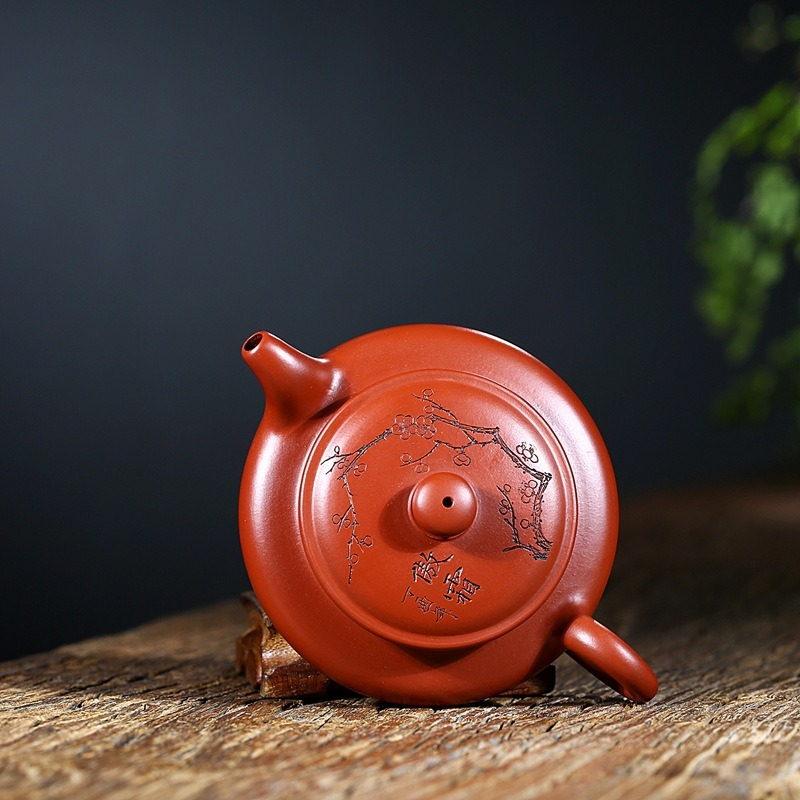
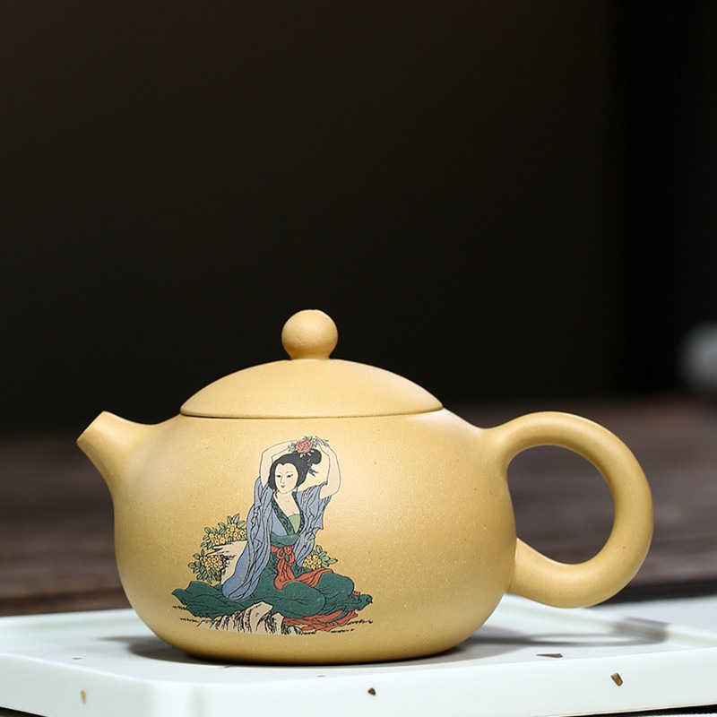
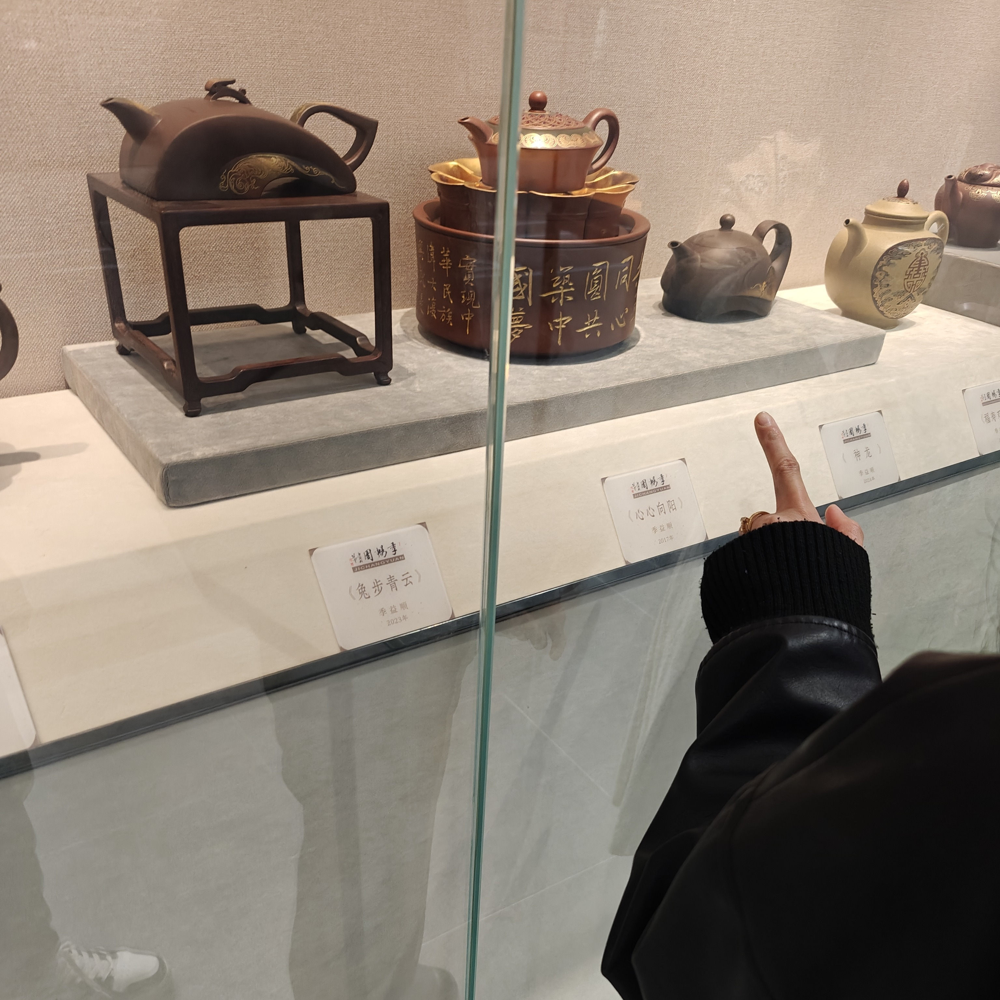
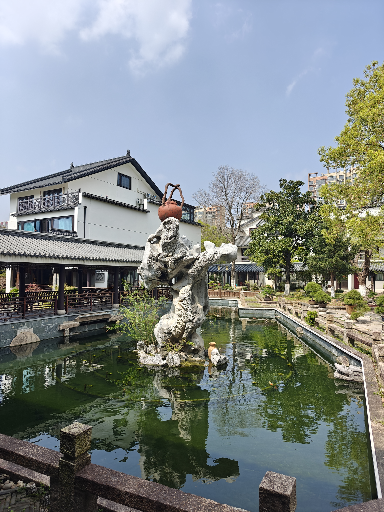
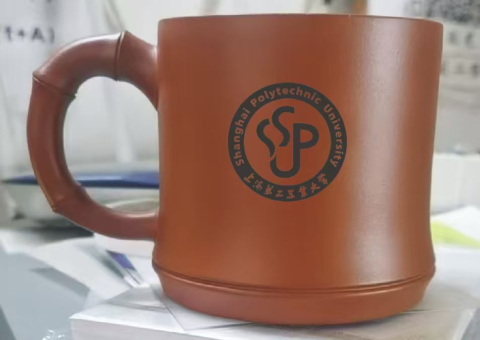

MAKING / 制作
MAKING / 制作MAKING / 制作
从一块泥，到一把壶
拍打、围身、整口，每一步都留下手的温度。
从矿料、器型到刻绘，沿着紫砂的时间轴，重新认识这门古老的手艺。
这里收藏着关于宜兴紫砂的器物档案、工艺知识和当代创作。
MAKING / 制作拍打、围身、整口，每一步都留下手的温度。

MATERIAL / 泥料紫泥、朱泥、段泥与绿泥，来自不同矿层的自然答案。

FORM / 器型西施、仿古、掇只、水平，器型是紫砂审美的秩序。

DECORATION / 装饰刻绘让一把壶拥有时间，也让茶席多了一份观看。

CULTURE / 茶事器以载道，紫砂与中国人的日常饮茶相伴相生。

NOW / 当代数字化不是替代手艺，而是让更多人看见它。
我们把可公开的器物资料整理成更容易进入的数字展陈。每张照片都来自项目采集或本地素材库，作为继续研究与创作的起点。想亲手试一把壶，可以前往 Web3D 模拟；已经有想法，则从定制工作台开始。